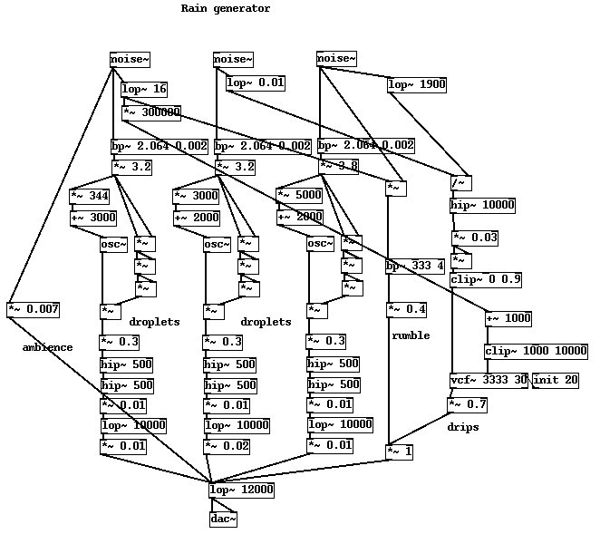
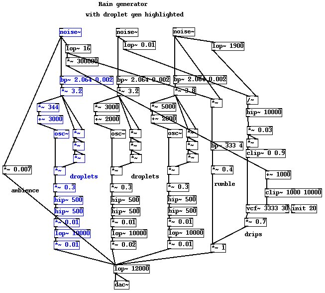
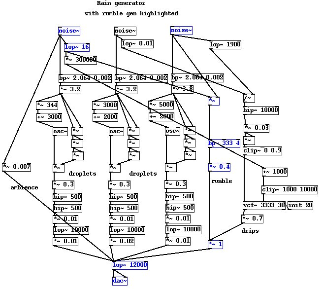
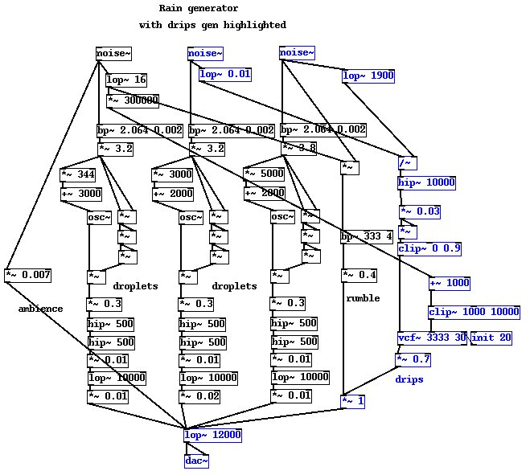
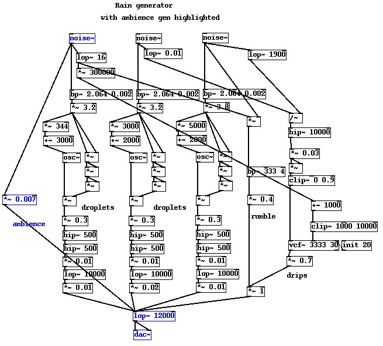

Listen to this clip first
Before going any further lets also be mindful of what we are expecting this patch to achieve. Ask the question again "What is the nature of rain? What does it do?" According to the lyrics of certain shoegazing philosophies it's "Always falling on me", but that is quite unhelpful. Instead consider that it is nearly spherical particles of water of approximately 1-3mm in diameter moving at constant velocity impacting with materials unknown at a typical flux of 200 per second per meter squared. All raindrops have already attained terminal velocity, so there are no fast or slow ones. All raindrops are roughly the same size, a factor determined by their formation at precipitation under nominally uniform conditions, so there are no big or small raindrops to speak of. Finally raindrops are not "tear" shaped as is commonly held, they are in fact near perfect spheres. The factor which prevents rain being a uniform sound and gives rain its diverse range of pitches and impact noises is what it hits. Sometimes it falls on leaves, sometimes on the pavement, or on the tin roof, or into a puddle of rainwater.
In this example we're departing from the previous practice of building in a stepwise fashion and starting with the finished patch. A great way to learn is looking at other peoples work and sometimes you find yourself staring at a a formula, patch or code, scratching your head and saying "What the Dickens is going on in this dogs dinner?" Sometimes obvious patterns jump out, but tracing the flow can be done methodically in a top down or bottom up sense. Take a look at the diagram below and see if you can identify the six components making up the sound.

The best place to begin is usually the bottom and working upwards until you find a leaf, some atom that doesn't have anything as a parameter or input. We can quickly find three almost identical subparts labled "droplets" which have [noise~] units as their topmost functions.
Let's take one of these droplets and work back down the flow. To begin with the noise signal is bandpass filtered almost at zero. The result is a gently sloping distribution of frequency. Following a slight scaling to bring the peak level to just slightly above 1 the signal is split into two parts, one which obtains its 8th power and another which multiplies it by a large number and adds it to another large number. What's going on here? Well, we are about to perform an FM operation to obtain an extremely rich and dynamic signal containing a bunch of frequencies centred around a peak somewhere in the 3-10kHz range, if you sniff the signal in the puredata patch through a strong attenuator you will hear a screaming noise not unlike the sound of a thousand cats being thrown into an industrial wood shredder. The keypoint is the high dynamic range. The average rate of shredding is a several hundred Hz, as performed by multiplying the 8th power by the filtered noise signal to produce a tiny blasts of frequency. Some of these are 10^19 times louder than the quietest ones, assuming a 32 bit machine word some of them fall outside of the range of possible values, but they get wrapped back into range. A steep hipass filter removes any pops and leaves us with a signal which when reduced in volume sounds like a series of clicks of short duration containing a wide spectrum of apparent centre frequencies.

Notice we didn't optimise this patch by factoring out a common noise source. Actually we needed more noise sources but instead borrowed the existing ones to reuse for three other parts. Next up is the rumble generator second from right in the diagram. Taking one white noise signal and modulating it with another filtered noise source at about 10Hz gets us an undulating source which when filtered with a medium resonance bandpass around 300Hz results in a thundery rumbling noise. This isn't meant to be "thunder" per se, rather the low frequency band of sounds we might expect from raindrops hitting bigger things, like dry ground or large man-made objects like car roofs.

The last subsection worth discussing is the drip generator on the far right. We took a little bit of noise rolled off above about 2kHz and divided it by a slowly fluctuating signal. We haven't covered division yet so it's worth explaining why we do this. The idea is to again create a signal with short peaks of a huge dynamic range. When the divisor is zero we should get infinity. Fortunately we don't have to avoid this condition as we would in other coding environments, the [/~] atom nicely handles the condition and gives us what we expect, a jolly big number. Just to be perverse we take the square of our "infinite" values, this is to remove any wobbles close to the click caused by the hipass filter which is essential to remove the occasional run of low frequencies caused by modulator. Now we meet a new atom, the [vcf~] unit. In all important regards this unit is identical with a normal bandpass, with the exception that it can have its centre frequency modulated by an audio rate signal. We want drip noises that lie in the range of 1kHz to about 10kHz and that is obtained by scaling some 10Hz centred noise, adding it to a base value and clipping it just to make sure we don't get odd bits of too high frequencies. A bug in the [vcf~] unit means it ignores any initial parameters and must be explicitly set up with an initial value before running, hence the [init 20] atom to prepare the resonance parameter.

No point in discussing the white noise added on the far left much, I think it's function is obvious. Notice the [* 0.007] (No Mr. Noise I expect you to die). It doesn't quite die, it just reduces it to almost nothing. This ambience value is extremely low in amplitude yet it still comes through clearly. When adding white noise to create a "filler" the trick is to be sparing and use far less than you probably think. And then use half of that.

Download the completed puredata file here.